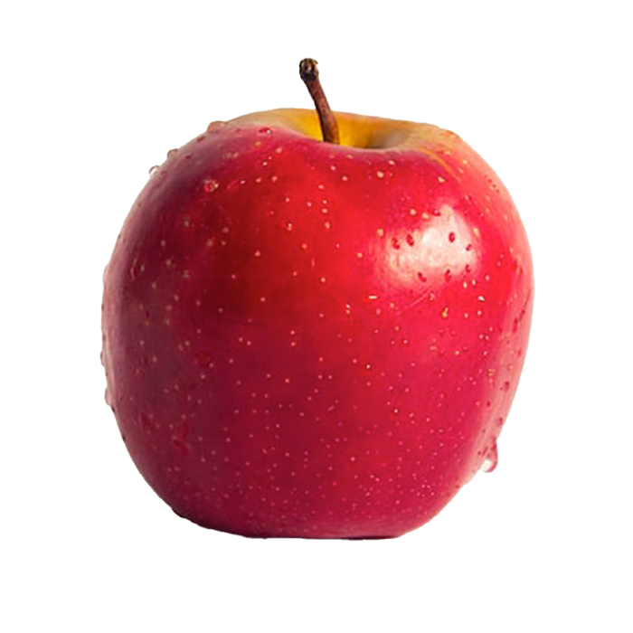

Alma
Menü:
Pónyik almafa oldal
oldal linkje ahonnan vannak a tudni valók
Tulajdonságai:
- Az almák ritkán tövises
- lombhullató kis fák vagy cserjék
- Leveleik egyszerűek
- karéjosak
- néha hasadtak
Kép egy piros almáról ami egy projecten belüli kép:

Kép egy piros almáról ami egy külső hivatkozásból származó kép